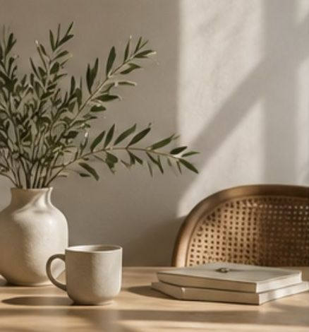
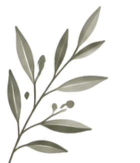
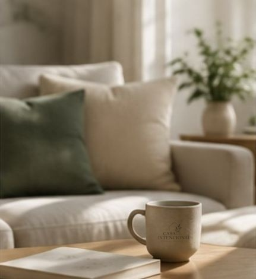
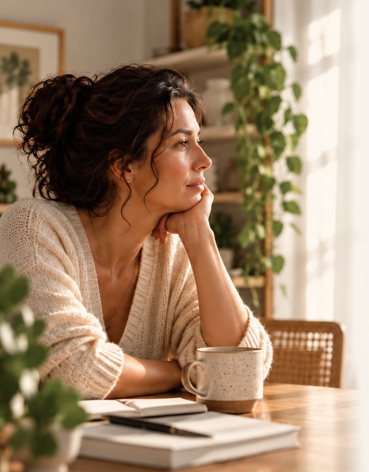

A vida que você deseja começa na casa que você já tem.
Descubra como transformar sua casa em uma aliada para viver com mais intenção, cultivar novos hábitos e construir uma rotina mais alinhada com o que realmente importa para você.



A casa e a sua vida
A sua casa é mais do que o lugar onde você vive.
É onde seus dias acontecem, seus hábitos ganham forma, suas relações se fortalecem e sua história continua sendo construída.
Mas, em meio às tarefas, às responsabilidades e à correria da rotina, nem sempre conseguimos perceber como os ambientes em que vivemos podem contribuir para a vida que desejamos ter.
E se, em vez de apenas cuidar da casa, você começasse a transformá-la em uma aliada da sua vida?
Uma casa que favorece seus hábitos, acolhe suas necessidades e ajuda você a viver com mais intenção, presença e conexão com aquilo que realmente importa.
Essa transformação não exige uma casa perfeita. Ela começa com um novo olhar para a casa que você já tem.

Talvez você se reconheça nisso
Os dias passam,
mas você sente que
sua vida está no
piloto automático.
Você cuida de muitas coisas e pessoas, cumpre suas tarefas, mas ainda assim sente que falta tempo para o que realmente importa para você.
A casa parece sempre demandar mais do que você consegue dar.
Você deseja viver com mais presença e intenção, mas não sabe por onde começar.
Você espera ter mais tempo, mais disposição ou uma casa melhor para começar a mudar.
Mesmo fazendo o seu melhor, às vezes sente que está apenas cumprindo tarefas.
A rotina é intensa e, muitas vezes, você se sente cansada e sem espaço para o que te faz bem.
Você sabe que algo precisa mudar, mas a mudança parece distante da sua realidade.
Você não está sozinha. Muitas mulheres sentem o mesmo. E é justamente por isso que o Casa Intencional existe.